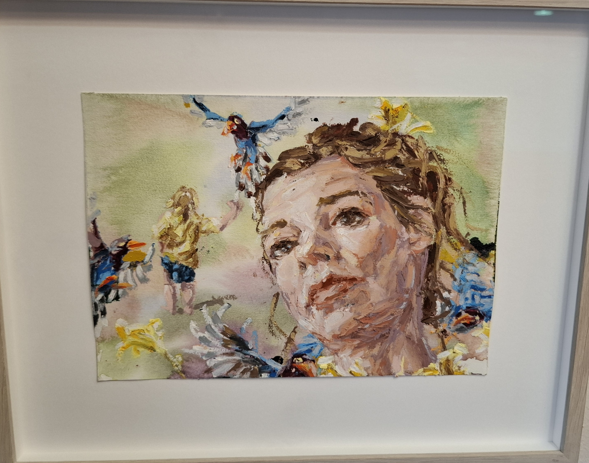

🎨 6 frågor baserat på delårsrapport 2, januari-augusti 2025

Linn Fernströms magiska bildvärld med expressiva porträtt och färgglada fåglar
Målningen visar ett expressivt porträtt omgivet av färgglada fåglar i blått, gult och andra livfulla toner - en perfekt illustration av Linn Fernströms unika förmåga att skapa en myllrande natur med insekter och blomster där seende och sökande gestalter återkommer. Fernströms särart ligger i hennes intrikata växling mellan verklighet och fiktion där hon låter människor med koncentrerade ansiktsuttryck samspela med djur i en magisk bildvärld. Som så ofta i hennes verk använder hon sig själv som modell och skapar ett alter ego som bjuder in betraktaren till en magisk och lätt surrealistisk värld. Verket exemplifierar hennes förmåga att fånga antydan om relationer, om förlust och om sökandet efter en riktning i varat genom sitt expressiva måleri.
Teknologier:
Funktioner:
Design:
Kompatibilitet: Fungerar i alla moderna webbläsare
Jag vill att du återanvänder samma programmeringsteknik som finns i quiz.html filen. Använd på samma sätt HTML, JavaScript och CSS för att skapa ett snyggt och lättnavigerat quiz.
Men att du skapar ett nytt quiz i en index.html fil. Filen quiz.html ska hela tiden vara oförändrad.
Nya quiz-frågor: 6 frågor om Kultur och Fritidsförvaltningens verksamhetsområden 2025, baserat på delårsrapport 2, januari-augusti 2025
Bildkrav: Använd bilden Linn_Fernstrom.jpg istället för bild_till_quiz1.jpg och visa den under 4 sekunder med efterföljande rullande text om konstverket.
Designkrav: Samma färgtema och funktionalitet som quiz.html, med responsiv design och moderna interaktionseffekter.